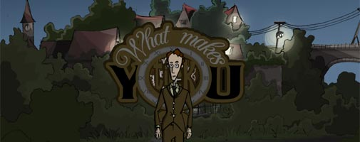
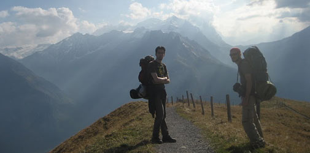

About our Games

The adventure game short story What Makes You Tick? (2007) and its full-length sequel What Makes You Tick: A Stitch in Time (2010) are classic point-and-click adventures created by Matthias Kempke (Night of the Rabbit, Pillars of the Earth) and co-authored by Greg MacWilliam (Lassie adventure engine).
The series brings to life motifs of Franz Kafka and Edgar Allen Poe. Classic adventure gamers and literary fans will enjoy the rich world, witty characters, and wry humor of the Tick series.
Part 1 - “What Makes You Tick?”
A young man named Nathan is sent by the University of B. to deliver an important message to one of their former faculty members. Nathan is sent to the doctor’ last known residence to warn him that he may be in grave danger.

However, Nathan soon discovers that he's not the only one seeking the old man and his brilliance ...
Part 2 - “WMYT: A Stitch in Time”
A young man named Nathan and a mysterious scientist—one Dr. William Coppelius—arrive in the seaside village of Ravenhollow in pursuit of Coppelius’ kidnapped granddaughter…

Meanwhile, another young man named Nigel Trelawney has been summoned to this sleepy fishing village to settle the estate of his late father, Dr. Anthony Trelawney. In his prime, Dr. Trelawney was one of nine elite scientists working at the Smith Institute for Advanced Research. Unfortunately, the Smith Institute members were forced to disband when a traitor was revealed among them. Now the Smith Institute stands silent and abandoned just outside of Ravenhollow, and Nigel arrives to sort through the remaining pieces of his father’s life.
However, Nigel soon discovers that not all is at peace within Ravenhollow. The shadow of a nearby castle has fallen over the village since a recluse baron—unseen within the castle walls—has amassed a security force to lock down the village. Tyranny and oppression have gripped the villagers, and newcomers are subject to intense scrutiny. As Nigel struggles to resolve his father’s estate amongst adversaries hidden within the castle, he begins to realize that the source of the deception plaguing Ravenhollow leads back to the Smith Institute and its untimely end; and that the matter of his father’s estate may be the key to finding Coppelius’ kidnapped granddaughter.
Bringing to life the literary themes of Franz Kafka, What Makes You Tick: A Stitch in Time embarks on a whole new epic adventure. Both new and familiar faces bring the world of Ravenhollow to life and encourage players to explore this world of many secrets during the day and at night!
Reviews
About the Authors
 Greg MacWilliam is the creator and software engineer of Lassie Adventure Studio, the Flash-based game engine behind the What Makes You Tick? games. Greg comes from Rochester, New York (USA) where he graduated from RIT with a degree in multimedia technology. Greg has since worked for Vox Media building digital brands including Polygon and The Verge, and now works for ... . In his free time, Greg enjoys the great outdoors, being a dad, and dreaming of traveling the globe again.
Greg MacWilliam is the creator and software engineer of Lassie Adventure Studio, the Flash-based game engine behind the What Makes You Tick? games. Greg comes from Rochester, New York (USA) where he graduated from RIT with a degree in multimedia technology. Greg has since worked for Vox Media building digital brands including Polygon and The Verge, and now works for ... . In his free time, Greg enjoys the great outdoors, being a dad, and dreaming of traveling the globe again.

Stitch concepting: Swiss Alps, 2007.
Matt and Greg met online in 1999 through cooperation on a Monkey Island fan site. Their common love of adventure games kept them in frequent contact, until they finally met in Leipzig, Germany in 2004. Their friendship has continued to grow since, and their work on adventure fan sites has evolved into making full-blown adventure games together. They have taken frequent adventures together over the years from wandering Berlin to hiking the Swiss Alps. Their planning and production of WMYT: A Stitch in Time took them from Prague, Czech Republic to the wilds of the American West.

Stitch puzzle planning: Grand Canyon, 2009.
The Story Behind the Voices
Originally, What Makes You Tick? and A Stitch in Time were released without voices... but a few years later that was about to change!
The 2014 "What Makes You Tick" Talkie

After eight years of silent subtitles, Greg approached the fabulous Maryland-based Happenstance Theater Company about finally recording an audio drama for What Makes You Tick?. They accepted the project, and the complete game screenplay was recorded in about 5-hours of studio time. The talkie version brought closure to the game's decade-long production cycle.
The 2015 "WMYT: A Stitch in Time" Talkie

While the What Makes You Tick? talkie was met with enthuasiasm, the prospect of recording Stitch was daunting due to its sheer size (6,000 vs. 600 lines). It all came down to finding the voice of Nigel who would carry the bulk of the recording. Lo and behold, Greg spent the summer working with Travis Van Der Hoop, who's improvisational wit matched the role. Audio production ran for a year and saw the return of all the original Tick actors.
Dr Pepper and the Hermit Crab ...
... or: how the smallest character from our game became a TV star!First thingst first. Back in 2004, Greg visited Matt for the first time at his home in Germany. Before Greg left the United States, he asked if there was any novelty items he could bring for Matt. Matt replied, "Dr. Pepper... in a can." Years later while creating What Makes You Tick?, Matt paid homage to the visit by giving Greg a cameo in the game where he offers our hero a can of Dr. Pepper.

Nathan then again offers the can to a hermit crab, who seems to be just as excited about Dr Pepper as Nathan and Matt are and gladly moves into his new home...

In 2015, Greg was sitting quietly at an airport bar when the Dr. Pepper Hermit Crab commercial came on, and he nearly fell out of his chair. We had no prior awareness of the commercial and assume it was released that year—which would put it about eight years after the release of Tick. While there's no hard proof that our Tick hermit crab inspired the television commercial, the similarities are difficult to ignore.
We are still waiting for 1000 free cans of Dr Pepper as compensation. Well, maybe we are better off without them anyway.